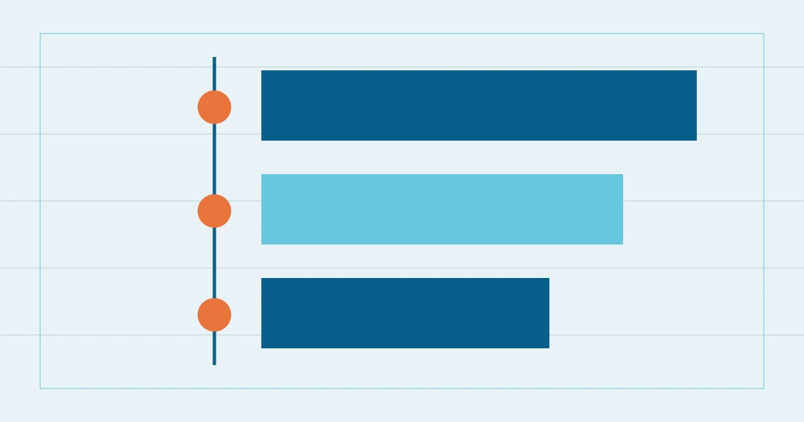

跳到主要内容%%TOPLINE_LABEL%%%%SITE_NAME%%%%SITE_TAGLINE%%
%%A8_EYEBROW%%
%%A8_TITLE%%
%%A8_INTRO%%- 撰写
- %%AUTHOR_NAME%%
- 刊载日期
- 最近复核

%%A8_COVER_CAPTION%%阅读路标
%%A8_H2_1%%
%%A8_BODY_1%%
%%A8_REVISION_1_TITLE%%
%%A8_REVISION_1_TEXT%%
%%A8_REVISION_1_NOTE%%%%A8_REVISION_2_TITLE%%
%%A8_REVISION_2_TEXT%%
%%A8_REVISION_2_NOTE%%%%A8_REVISION_3_TITLE%%
%%A8_REVISION_3_TEXT%%
%%A8_REVISION_3_NOTE%%
%%A8_H2_2%%
%%A8_BODY_2%%
%%A8_H2_3%%
%%A8_BODY_3%%
%%A8_BODY_3_MORE%%
%%A8_H2_4%%
%%A8_BODY_4%%
%%A8_BODY_4_MORE%%
%%A8_FAQ_TITLE%%
%%A8_FAQ_Q_1%%
%%A8_FAQ_A_1%%
%%A8_FAQ_Q_2%%
%%A8_FAQ_A_2%%